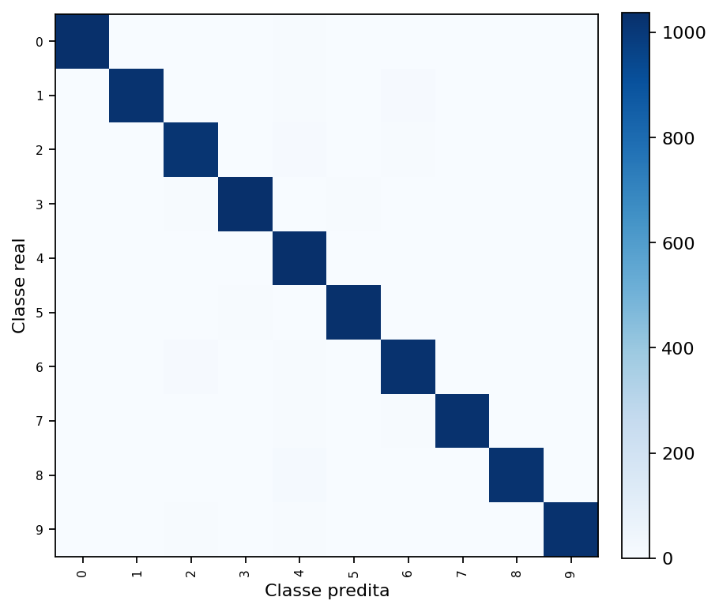
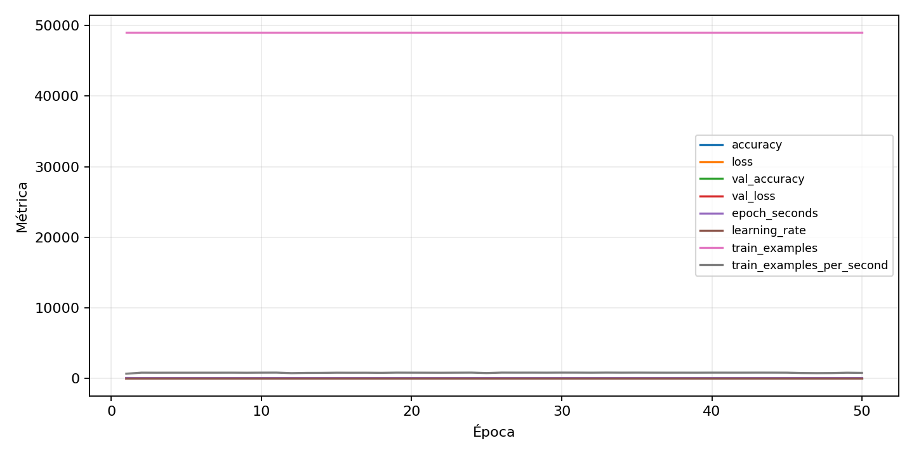

| n_samples | 10500 |
|---|---|
| loss | 0.10831178724765778 |
| accuracy | 0.9797142857142858 |
| balanced_accuracy | 0.9797142857142859 |
| macro_f1 | 0.9797503060730947 |


| Índice | Classe | Suporte | Precisão | Recall | F1 |
|---|---|---|---|---|---|
| 0 | 0 | 1050 | 0.9904214559386973 | 0.9847619047619047 | 0.9875835721107927 |
| 1 | 1 | 1050 | 0.9874638379942141 | 0.9752380952380952 | 0.9813128893148061 |
| 2 | 2 | 1050 | 0.9722488038277513 | 0.9676190476190476 | 0.9699284009546539 |
| 3 | 3 | 1050 | 0.9847619047619047 | 0.9847619047619047 | 0.9847619047619047 |
| 4 | 4 | 1050 | 0.9470802919708029 | 0.9885714285714285 | 0.967381174277726 |
| 5 | 5 | 1050 | 0.9837786259541985 | 0.981904761904762 | 0.9828408007626311 |
| 6 | 6 | 1050 | 0.9689265536723164 | 0.98 | 0.9744318181818182 |
| 7 | 7 | 1050 | 0.9865771812080537 | 0.98 | 0.9832775919732442 |
| 8 | 8 | 1050 | 0.9874517374517374 | 0.9742857142857143 | 0.9808245445829339 |
| 9 | 9 | 1050 | 0.9903753609239654 | 0.98 | 0.9851603638104356 |
{"adapter":"kmnist","balance_mode":"all_raw","class_names":["0","1","2","3","4","5","6","7","8","9"],"dataset":"kmnist","dataset_options":{},"dataset_root":"/home/msduda/datasets-tcc/kmnist","native_channels":1,"normalization":"unit_interval","num_classes":10,"protocol":{"checkpoint_monitor":"val_macro_f1","dtype_policy":"mixed_float16","early_stopping":{"patience":50,"restore_best_weights":true},"evaluation_augmentation":false,"input_channels":"native","optimizer":"Adam","pretrained_weights":false,"reduce_lr_on_plateau":{"factor":0.3,"min_lr":1e-07,"patience":50},"resize":"proportional_padding","test_time_augmentation":false,"training_from_scratch":true},"seed":42,"source_fingerprint":"8928d478d8d23938a73b4f4a92c407bf3d74beff1e0e67e3644d6ecdc30cf828","source_manifest":{"class_names":["0","1","2","3","4","5","6","7","8","9"],"joined_samples":70000,"metadata":{"layout":"kmnist-component-npz"},"name":"kmnist","native_channels":1,"source_path":"/home/msduda/datasets-tcc/kmnist","splits":{"test":10000,"train":60000},"target_size":64},"target_size":64,"test_fraction":0.15,"train_fraction":0.7,"training":{"augmentation":{"brightness_delta":0.0,"contrast_lower":1.0,"contrast_upper":1.0,"cutout_max_frac":0.0,"cutout_prob":0.0,"flip_lr":false,"noise_std":0.0,"translate_frac":0.0,"zoom_max":1.0,"zoom_min":1.0},"batch_size":144,"default_image_size":64,"dtype_policy":"mixed_float16","early_stopping_patience":50,"extra_fraction":0.0,"image_size_overrides":{"gtsrb":128},"keras_verbose":1,"learning_rate":0.0003,"max_epochs":50,"preprocess_cache_max_mib":0,"reduce_lr_factor":0.3,"reduce_lr_min_lr":1e-07,"reduce_lr_patience":50,"shuffle_buffer_max_mib":0},"validation_fraction":0.15}
{"epochs_completed":50,"epochs_recorded":50,"evaluation_seconds":22.198929121997935,"fit_seconds_current_attempt":3644.813479668999,"max_epoch_seconds":72.49481755899978,"max_epochs":50,"mean_epoch_seconds":60.27269071895979,"mean_train_examples_per_second":813.9913812305736,"median_train_examples_per_second":823.0155700059054,"min_epoch_seconds":58.685361317999195,"selected_checkpoint":"/mnt/e/tcc-benchmark/outputs/kmnist-alldata-noaug-batch-sweep-2026-08-06/batch-144/kmnist/runs/kmnist__unit_interval__all_raw__seed-42/checkpoints/best.keras","total_seconds":3013.634535947989,"training_seconds":3013.634535947989,"wall_seconds_current_attempt":3670.5828538120004}
{"elapsed_seconds":3670.628578799002,"event_counts":{"data_preparation_end":1,"data_preparation_start":1,"epoch_end":50,"evaluation_end":1,"evaluation_start":1,"fit_end":1,"fit_start":1,"periodic":724,"run_completed":1,"train_start":1},"generated_at":"2026-08-07T10:05:09.451+00:00","gpu_backend":"pynvml","interval_seconds":5.0,"metrics":{"cpu_percent":{"count":782,"max":18.2,"mean":13.002813299232738,"min":0.0,"p50":12.6,"p95":16.7},"disk_data_free_bytes":{"count":782,"max":998271270912.0,"mean":998271101577.4937,"min":998201307136.0,"p50":998271270912.0,"p95":998271270912.0},"disk_data_percent":{"count":782,"max":2.7,"mean":2.7,"min":2.7,"p50":2.7,"p95":2.7},"disk_data_total_bytes":{"count":782,"max":1081101176832.0,"mean":1081101176832.0,"min":1081101176832.0,"p50":1081101176832.0,"p95":1081101176832.0},"disk_data_used_bytes":{"count":782,"max":27907514368.0,"mean":27837719926.506393,"min":27837550592.0,"p50":27837550592.0,"p95":27838910464.0},"disk_output_free_bytes":{"count":782,"max":207341211648.0,"mean":207328342173.13556,"min":207327260672.0,"p50":207328157696.0,"p95":207328440320.0},"disk_output_percent":{"count":782,"max":79.3,"mean":79.3,"min":79.3,"p50":79.3,"p95":79.3},"disk_output_total_bytes":{"count":782,"max":1000186310656.0,"mean":1000186310656.0,"min":1000186310656.0,"p50":1000186310656.0,"p95":1000186310656.0},"disk_output_used_bytes":{"count":782,"max":792859049984.0,"mean":792857968482.8645,"min":792845099008.0,"p50":792858152960.0,"p95":792858955776.0},"elapsed_seconds":{"count":782,"max":3670.575849,"mean":1838.0451584808184,"min":0.02312,"p50":1836.418592,"p95":3500.5125799499997},"gpu_count":{"count":782,"max":1.0,"mean":1.0,"min":1.0,"p50":1.0,"p95":1.0},"gpu_memory_percent":{"count":782,"max":34.68174934387207,"mean":34.52944353108516,"min":30.050373077392578,"p50":34.522294998168945,"p95":34.661149978637695},"gpu_memory_total_bytes":{"count":782,"max":8589934592.0,"mean":8589934592.0,"min":8589934592.0,"p50":8589934592.0,"p95":8589934592.0},"gpu_memory_used_bytes":{"count":782,"max":2979139584.0,"mean":2966056614.30179,"min":2581307392.0,"p50":2965442560.0,"p95":2977370112.0},"gpu_temperature_c":{"count":782,"max":54.0,"mean":41.62404092071611,"min":37.0,"p50":41.0,"p95":47.0},"gpu_utilization_percent":{"count":782,"max":98.0,"mean":18.308184143222505,"min":0.0,"p50":12.5,"p95":43.0},"process_cpu_percent":{"count":782,"max":217.9,"mean":166.72659846547313,"min":0.0,"p50":157.3,"p95":213.79500000000002},"process_read_bytes":{"count":782,"max":11358208.0,"mean":11331248.777493605,"min":7933952.0,"p50":11358208.0,"p95":11358208.0},"process_rss_bytes":{"count":782,"max":3816796160.0,"mean":3622344096.4092073,"min":1029595136.0,"p50":3713544192.0,"p95":3773874176.0},"process_vms_bytes":{"count":782,"max":48603377664.0,"mean":48290172241.84143,"min":39580524544.0,"p50":48386412544.0,"p95":48520630272.0},"process_write_bytes":{"count":782,"max":1183744.0,"mean":1171723.1304347827,"min":4096.0,"p50":1183744.0,"p95":1183744.0},"ram_available_bytes":{"count":782,"max":15520710656.0,"mean":13097027735.897697,"min":12904779776.0,"p50":13009041408.0,"p95":13523492044.8},"ram_percent":{"count":782,"max":22.3,"mean":21.194884910485936,"min":6.6,"p50":21.7,"p95":22.1},"ram_total_bytes":{"count":782,"max":16619077632.0,"mean":16619077632.0,"min":16619077632.0,"p50":16619077632.0,"p95":16619077632.0},"ram_used_bytes":{"count":782,"max":3714297856.0,"mean":3522049896.1023016,"min":1098366976.0,"p50":3610036224.0,"p95":3671916134.4}},"sample_count":782,"schema_version":1}